Repaso de la Tanda 10N10
El repaso de Eric de la 10N7 y la 10N8: avisos, EXPLORAR, DÍAS, el presupuesto con interruptor, las hojas de dinero, RESERVAS con el vuelo y el alojamiento nuevos, comprar la entrada a la misma hora y la lista del pase en lugar de la película. Marca cada punto en tu teléfono cuando lo hayas comprobado (se guarda en este navegador).
0 · Antes de empezar ✅ Hecho — Prompt guardado en docs/dias/PROMPT_TANDA10N10.md (con los dos añadidos: 0a y 8b) e incluido en el commitDónde: No es de móvil. ✅ Hecho — Reglas de la app: las nuevas de esta tanda, añadidas a docs/REGLAS_DE_LA_APP.mdPersonas cuadradas/redondas, preguntas en tinta azul, títulos solos, cuentas sin botón, orden de las hojas de dinero, comprar a la misma hora, parada que no se mueve con la entrada, botones flotantes siempre por encima. Dónde: No es de móvil. ✅ Hecho — Design al día desde RETOQUES.zip: Presupuesto Compartido, Vuelo Reservas, Entrada Nueva y Cuentas GrupoSolo lo que cambia en docs/diseno/proyecto/Piezas (Cuentas Grupo ya era igual). Dónde: No es de móvil. ✅ Hecho — Cómo trabajar: hasta 4 agentes (con el 5.º de las pruebas de la lista), un solo servidor y un solo Chrome, memoria mirada, nota de estado cada 30 min a la rama «estado»Se cerraron agentes, Chrome y procesos al acabar (ver el informe). Dónde: No es de móvil. ✅ Hecho — Migraciones nuevas, sin editar las anteriores y con su comprobaciónHay que aplicar la 0065 y la 0067 (en ese orden, después de la 0064 que ya tienes). La 0066 no existe (hueco de numeración). Nada de la 0062. Dónde: Supabase > SQL editor: 0065_avisos_cada_cambio_nuevo_y_vuelo_del_invitado.sql y 0067_cuentas_segun_personas.sql. 0a · Tus dudas de la 10N9 ✅ Hecho — El resumen «✓ Ida…» en las pestañas del vuelo, como Piezas/Vuelo ReservasPestañas Ida | Vuelta con ✓ cuando están rellenas. Dónde: RESERVAS > Llegada y vuelta > Tu vuelo (cuenta de Eric). 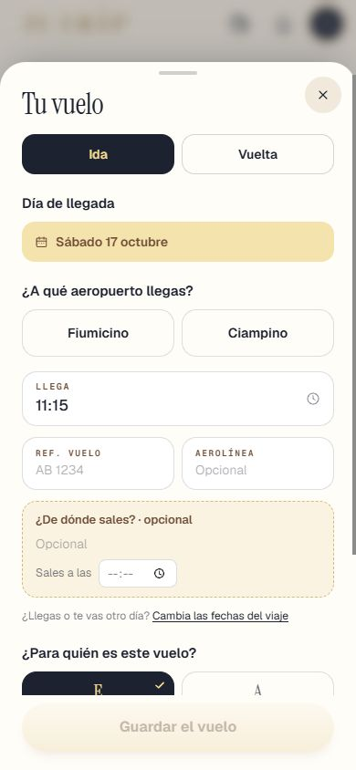
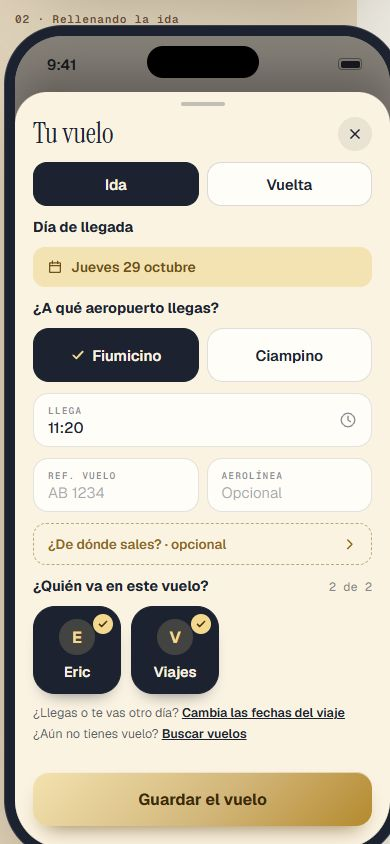
✅ Hecho — El precio del vuelo del invitado: la hoja lleva «¿Cuánto ha costado en total?» para todosDónde: RESERVAS > Llegada y vuelta con la cuenta de Ana. 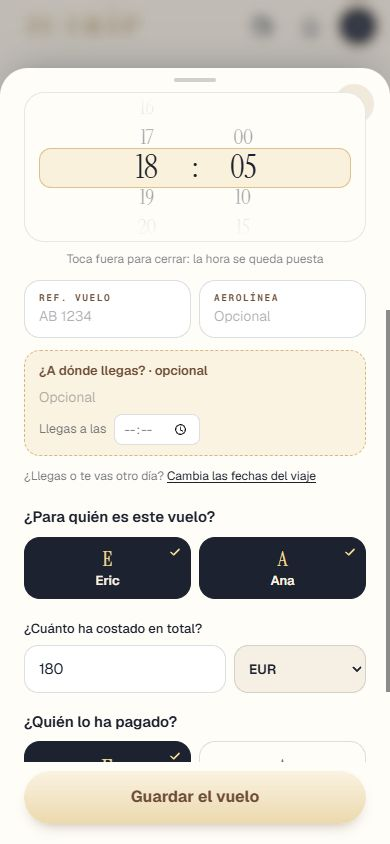
✅ Hecho — Chip de logros de «Mis viajes»: solo con dato real, si no fueraNo hay forma fiable de contar los logros de cada destino, así que el chip no existe: solo salen paradas y fotos. Dónde: Perfil > Mis viajes. ✅ Hecho — modo_cuentas_del_viaje (SQL) sigue la regla nueva del 5a (1 sola, 2 o familia conjunta, 3+ grupo)Migración 0067, probada en PGlite (pareja, tres, dos amigos, familia, modoCuentas ignorado). Dónde: No es de móvil. 1 · Los avisos ⚠️ A medias — Le llegan al invitado: quitar un día, cambiar el orden, añadir un restauranteEn el Supabase real YA llegaban (todos en menos de 1 s, con franja y petición de sonido, tabla en el informe). Causa más probable de lo que viste: la línea «Han cambiado el viaje» llevaba la misma clave que el aviso y se lo comía. Arreglado, pero no reproducido en tus móviles. Dónde: Dos móviles: Eric administrador y Ana invitada; quitar un día, cambiar el orden, añadir un restaurante. ✅ Hecho — Dos cambios seguidos: cada uno es un aviso nuevo, con franja y sonidoCausa real: la 0058 borraba el aviso anterior sin leer. La 0065 hace que cada cambio nuevo sea un aviso nuevo. Necesita aplicar la 0065. Dónde: Dos móviles: quitar el Free Tour y a continuación otra cosa. ⚠️ A medias — El sonido suena siempreTres fallos reales corregidos (separación de 2,5 s, audio parado en iPhone, reanudación colgada). No verificado en un iPhone real. Con el iPhone en silencio no suena (decisión de la 8A de respetar el interruptor). Dónde: Móvil de Ana con el sonido puesto: que llegue un aviso. ✅ Hecho — El vuelo del invitado avisa al administrador: «Viajes ha puesto su vuelo: ida jue 29 · 11:20, vuelta sáb 31 · 18:05.»Causa: en cuenta conjunta el vuelo «solo para él» no avisaba a nadie. Con la 0065 llega. Probado con PGlite y la frase exacta. Dónde: Móvil de Eric al guardar Ana su vuelo. ✅ Hecho — Prueba real con dos cuentas contra el Supabase real, caso por caso, y mirar RealtimeHecha sin la 0065 (7 casos, tabla en el informe y en docs/dias/_10n10_tabla_avisos.md). Realtime activo en trips y avisos: no hay que activar nada. Tras aplicar la 0065, repetirla con --con0065. Dónde: No es de móvil. 2 · EXPLORAR ⚠️ A medias — El botón de los logros no desaparece al abrir un bloqueNo se ha podido reproducir: en la prueba el botón se ve en los 7 bloques. Se reforzó el código (una hoja invisible ya no lo esconde). Si te falla otra vez, dime con qué cuenta y si tiene pase. Dónde: EXPLORAR > tocar un bloque > mapa con el filtro: el botón sigue. 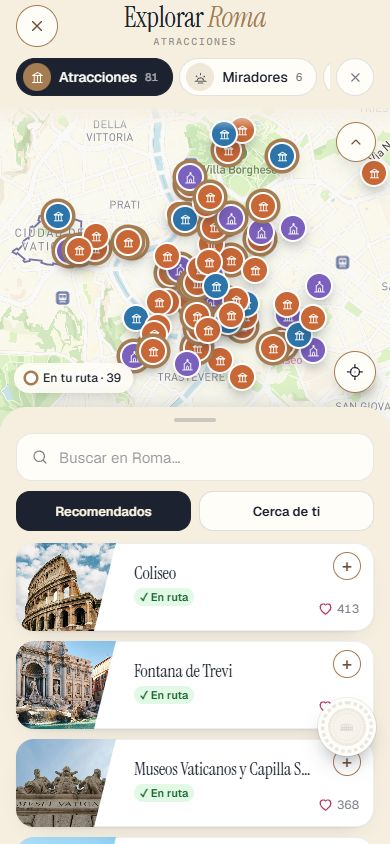
✅ Hecho — Restaurantes, cafés, helados y bares con el + en EXPLORAR (en «Comida — vie 30» sigue «Elegir»)Dónde: EXPLORAR > Restaurantes. 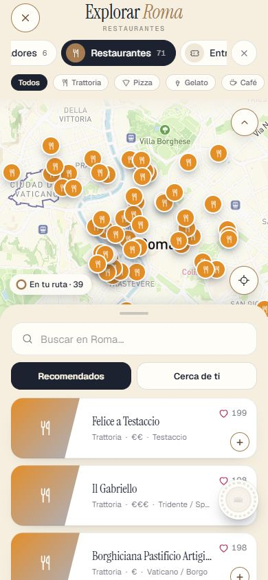
✅ Hecho — Fuera el botón «Free Tour» de arriba a la derecha de elegirDónde: «Comida — vie 30» y «+ Añadir parada». 3 · RUTA y DÍAS ✅ Hecho — La pastilla del pase se pinta al momento con lo último que se sabíaGuardado en el móvil por viaje; HOY y los candados también se pintan desde lo guardado. Dónde: RUTA al abrir el viaje. ✅ Hecho — Añadir parada entre dos: vuelve a DÍAS, baja hasta ella y la marca, sin «Añadido…» ni [Deshacer]Desde la pestaña EXPLORAR queda como hoy. Dónde: DÍAS > + Añadir parada entre dos > tocar el + de un sitio. ✅ Hecho — «+ Añadir parada»: primero solo sitios para visitar, los más recomendados primeroLos restaurantes salen al tocar su bloque. Dónde: DÍAS > + Añadir parada. 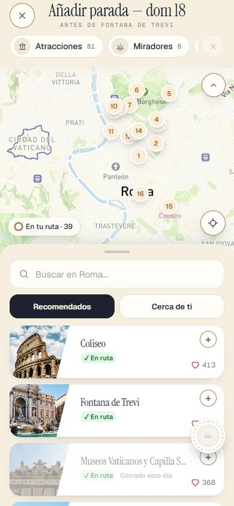
✅ Hecho — Reservar una entrada con hora no mueve la paradaEra solo del cliente; el motor de rutas NO se ha tocado. La parada coge la hora de su entrada pero se queda en su sitio (puede quedar una hora fuera de orden hasta que la muevas). Dónde: DÍAS > Vaticano por la mañana > reservar a otra hora. 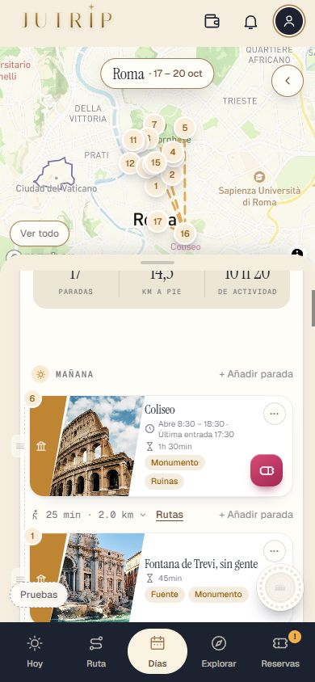
✅ Hecho — Castillo de Sant'Angelo con foto de día, distinta de la del Puente, con licencia libre y fuenteYa la tenía desde la 10O (Wikimedia Commons, CC BY-SA 3.0, fuente en _fotos.json). Si ves la de noche es un viaje guardado antes de la 10O. Dónde: DÍAS > Castel Sant'Angelo y su ficha. 4 · Reglas nuevas ✅ Hecho — Personas: cuadrados para elegir, redondo para enseñar (también «Nuevo gasto»)Dónde: Cualquier hoja de ¿Para quién…? / ¿Quién lo ha pagado? 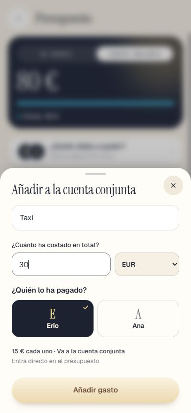
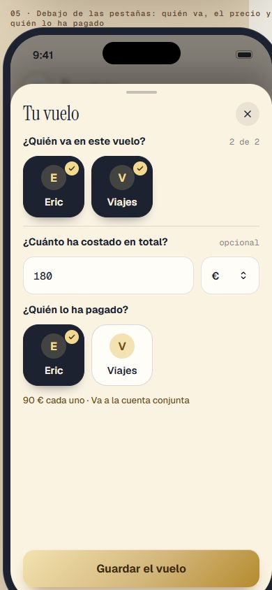
✅ Hecho — Las preguntas con la letra en tinta azul de DesignDónde: Todas las hojas de dinero. ✅ Hecho — Títulos «Reservas» y «Presupuesto» solosDónde: RESERVAS y Presupuesto. 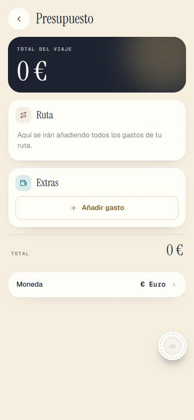
5a · Presupuesto: sin botón de cómo se llevan las cuentas ✅ Hecho — Fuera el botón «¿Cómo lleváis las cuentas?», su hoja, su confirmación y sus avisos; lo decide la app (1 / 2 o familia / 3+)Una persona: sin interruptor, «Total del viaje». Dónde: Presupuesto con 1, 2 y 3 personas. 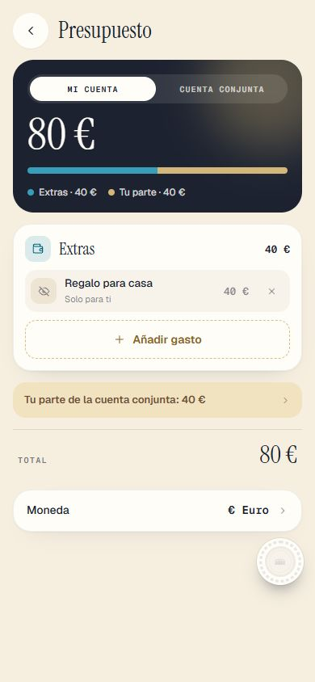
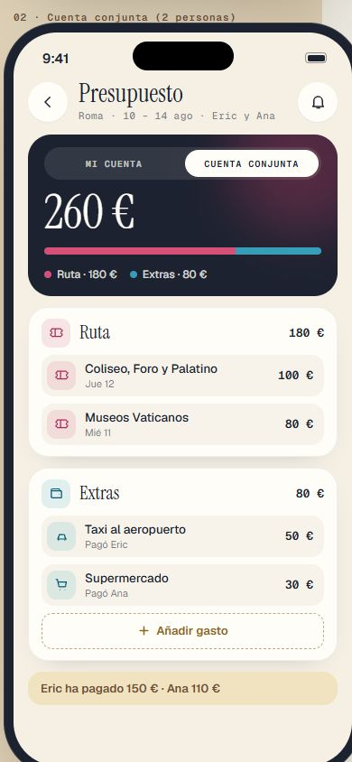
⚠️ A medias — Cambio del número de personas al céntimo (1→2, 2→3, alguien sale)Probado en las cuentas. Límite: la tercera persona se reparte solo entre las dos primeras si el administrador abrió el viaje con dos (dato cuentaConjuntaCon); si no, entre todos. Dónde: Presupuesto de un viaje que pasa de 2 a 3 personas. ✅ Hecho — Qué se quita de la 10N7 y qué se aprovechaDicho en el informe. Dónde: No es de móvil. 5b · Cada pestaña con lo suyo ✅ Hecho — Interruptor «Mi cuenta | Cuenta conjunta / del grupo», leyenda con importes siempreDónde: Presupuesto. 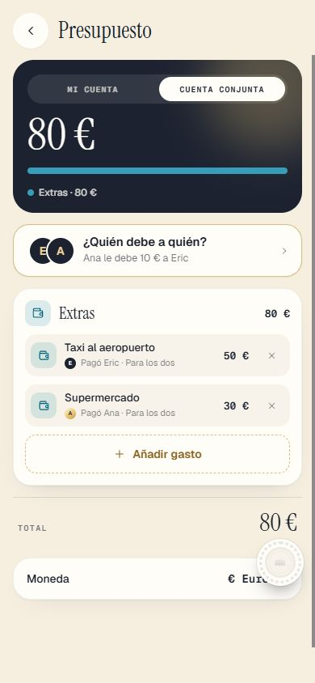
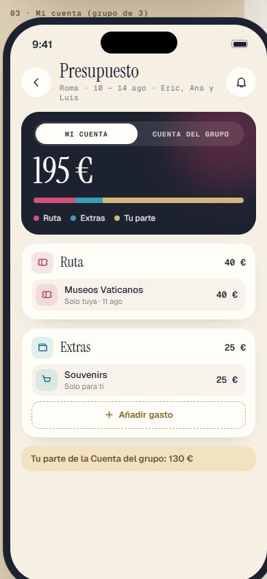
✅ Hecho — Mi cuenta: lo mío + línea amarilla «Tu parte de la cuenta conjunta» que se toca, con detalle y correcciónDónde: Presupuesto > Mi cuenta > tocar la línea amarilla. 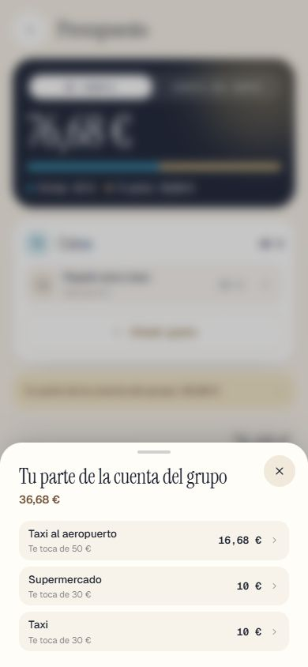
✅ Hecho — Cuenta conjunta/del grupo con «¿Quién debe a quién?» solo en las pestañas comunesDónde: Presupuesto > Cuenta conjunta / del grupo. 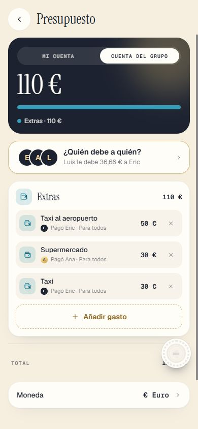
✅ Hecho — Fuera «Lo tuyo», «Del grupo 0 € · Lo tuyo · Total», «por persona» y la pastilla «Tu parte»; tocar un gasto abre su hojaLas reservas abren la hoja de siempre de cada cosa. Dónde: Presupuesto > tocar un gasto. 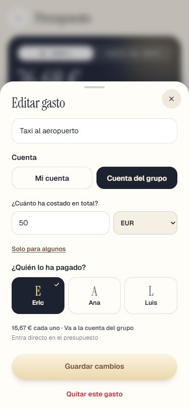
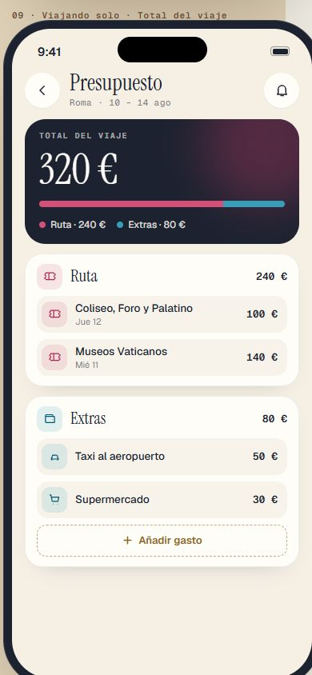
6 · Hojas para apuntar dinero ✅ Hecho — Mismo orden y textos: qué es, para quién, cuánto, quién lo ha pagado, línea de a dónde va, botónGasto suelto, vuelo, alojamiento, entradas, Free Tour y excursión. Dónde: Añadir gasto, vuelo, alojamiento, entrada. ✅ Hecho — «Añadir a Mi cuenta / a la cuenta conjunta / del grupo» y «Solo para algunos»Dónde: Presupuesto > + Añadir. 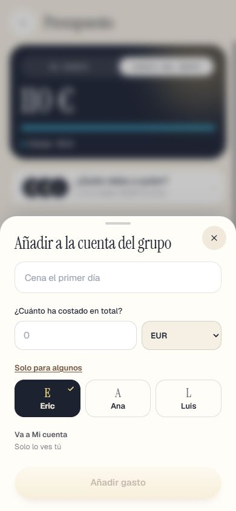
✅ Hecho — Fuera «¿A qué cuenta lo sumamos?», [Para todos]/[Para mí] y las preguntas antiguasDónde: No es de móvil. ✅ Hecho — Ejemplo del vuelo de 180 € (Eric y Viajes, pagó Eric) cuadraConjunta 180 €; Tu parte 90 € cada uno; «Viajes le debe 90 € a Eric»; solo Eric: 180 € en su Mi cuenta. Dónde: Presupuesto con dos cuentas. ⚠️ A medias — Coche y coche de alquiler con su «¿Para quién es el coche?»La hoja del coche usa la pieza común, pero no he comprobado su pantalla aparte. Dónde: RESERVAS > Coche. 7 · RESERVAS ✅ Hecho — Pantalla RESERVAS con el aspecto de Vuelo Reservas 01, sin perder nadaDónde: RESERVAS. 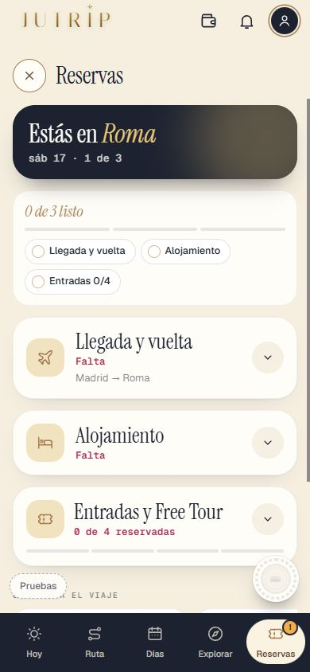
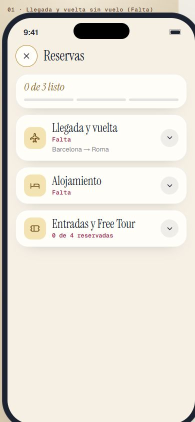
⚠️ A medias — Vuelo: pestañas, dinero debajo, rueda sin [Guardar], un solo «Guardar el vuelo», tarjeta guardada, lo que ve otra personaHecho como 02-07 y 05b. Diferencias: «Sale a las» es un selector de hora normal, no rueda; «Eliminar vuelo» sigue como texto rojo dentro de cada mitad. Dónde: RESERVAS > Llegada y vuelta (Eric y Ana). 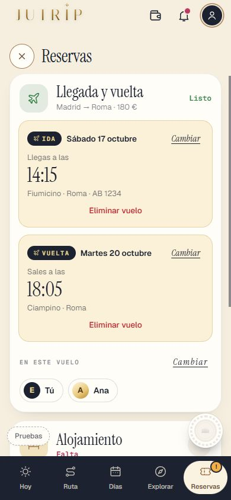
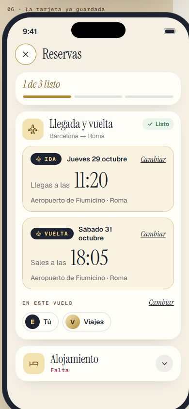
✅ Hecho — Alojamiento como 08, 08b y 09, con «¿Para quién es el alojamiento?»La zona se puede elegir también sin pase (no cambia la ruta). Sin nombre pero con precio, toma el nombre de la zona. Dónde: RESERVAS > Alojamiento. 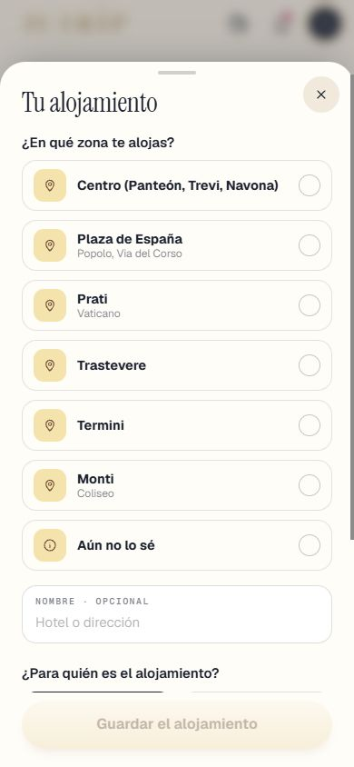
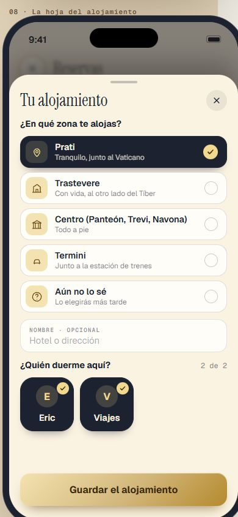
✅ Hecho — Caja del pase del alojamiento con zona elegida: «Adaptamos tu ruta a Prati»Sin zona, como la dibuja Design. Dónde: RESERVAS > Alojamiento (versión sin pase). 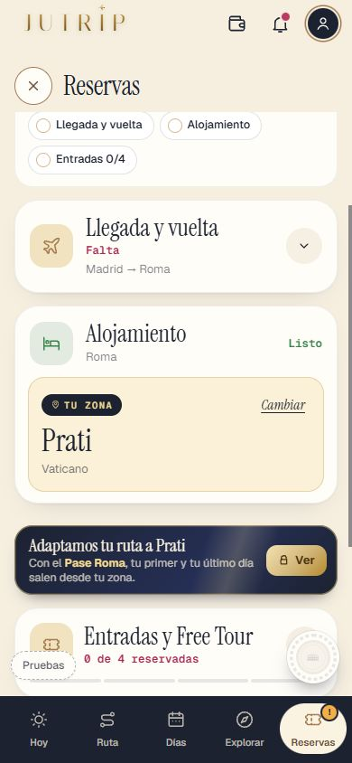
✅ Hecho — Entradas como Entrada Nueva 01-03, con el orden del apartado 6«¿Quién la ha pagado?» en cuadrados. Dónde: RESERVAS > Entradas. 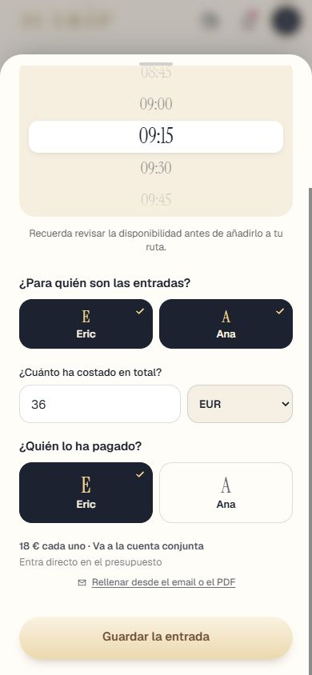
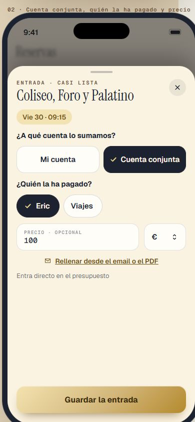
8 · Comprar a la misma hora ⚠️ A medias — [Ir a comprar] con la línea «Eric la tiene el jueves 12 a las 14:00…» y la pregunta al volver con [Guardar]/[Todavía no]Hecho. [Guardar] guarda la entrada directamente con día y hora ya puestos, sin abrir otra hoja. Dónde: Cuenta de Ana con una entrada de Eric: Ir a comprar; volver de la web. 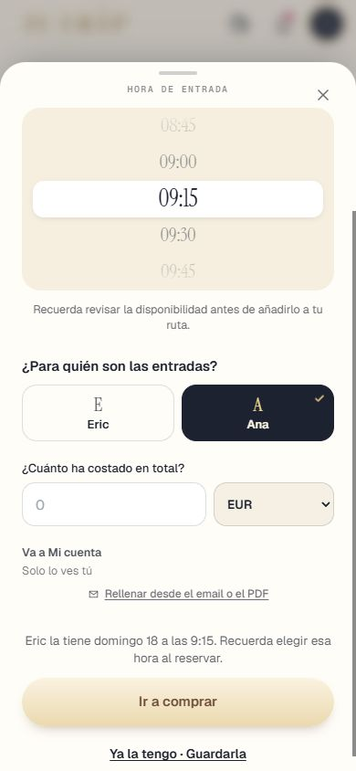
⚠️ A medias — docs/civitatis/peticion_search_400.md preparada, sin token, sin enviarHecha con URL, cabeceras, cuerpos y «<TOKEN>». La respuesta real del 400 no está guardada en el repo: queda marcada «completar con la respuesta real». Dónde: No es de móvil. 8b · Fuera la película del pase ✅ Hecho — La película se quita; la lista del pase (escena 7) como pantalla propia; todo lo que abría la película abre la lista, siemprePastilla, aviso del pase, cajas pequeñas, HOY, «Tu último día», logros cerrados. Dónde: RUTA > pastilla «Pase Roma». 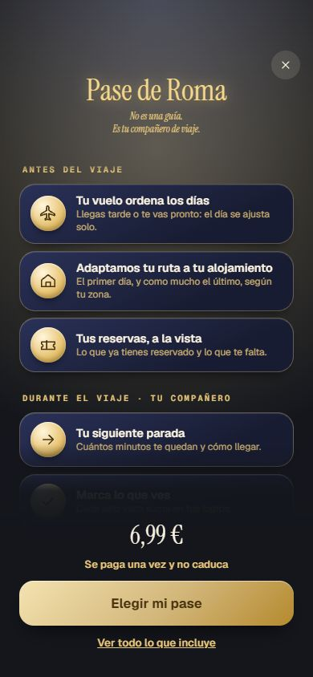
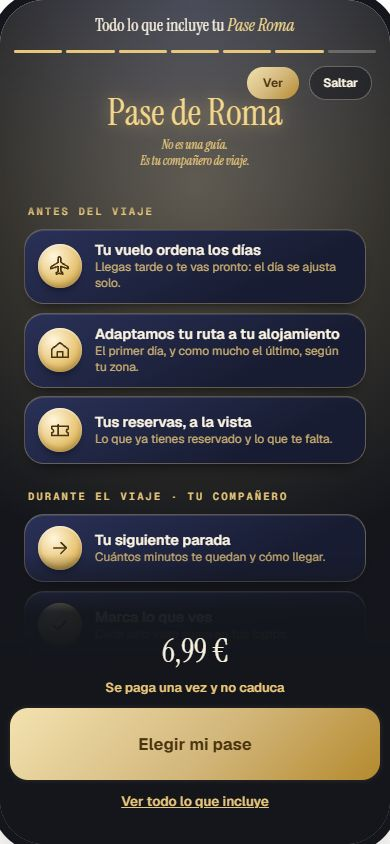
⚠️ A medias — Quitado el código de la película que no se usa (escenas, música, silencio, «ya la ha visto») y las pruebas de la película cambiadas por las de la listaEl chunk de la lista pesa 1,13 MB porque gen/Pase_Pelicula.ts conserva el código de las escenas y mapas.ts (el mapa del mundo): se puede recortar más. Las capturas viejas de la película se dejan (historial). Dónde: No es de móvil. ✅ Hecho — La lista con «¿Cuántos sois?»Dónde: Lista del pase > [Elegir mi pase]. 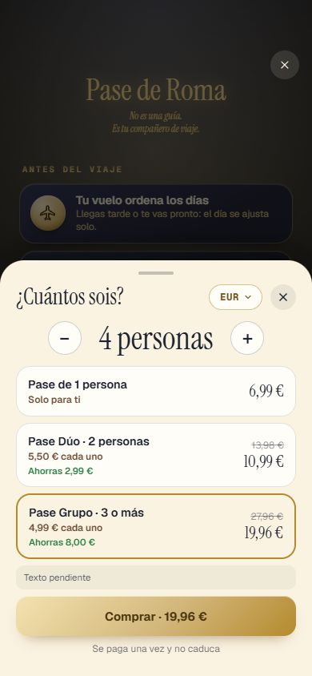
9 · La prueba ✅ Hecho — Prueba nueva pruebaTanda10N10 (avisos, explorar, cuentas, reservas) y la de dos cuentas reales202 comprobaciones en 0 fallos (avisos 23, explorar 44, cuentas 82, reservas 53) Dónde: No es de móvil. ✅ Hecho — La batería completa y pruebaJutripBatería completa dos veces: 148 pruebas, 147 en verde y 1 que pasó sola; pruebaJutrip 129/0. Ver el informe. Dónde: No es de móvil. ✅ Hecho — Capturas en docs/dias/capturas_jutrip/ y en REPASO_10N10.html, a tamaño de móvil, cada una al lado de la de DesignDónde: Esta página. 10 · El informe ✅ Hecho — Apartado «10N10» en INFORME_TANDA10B.md (por qué no llegaban los avisos y lo del sonido con la tabla, qué se quita de la 10N7, qué migración aplicar) y esta lista al finalDónde: No es de móvil. Todas las capturas
10n10_cuentas_01_solo 10n10_cuentas_02_mi_cuenta_conjunta 10n10_cuentas_03_cuenta_conjunta 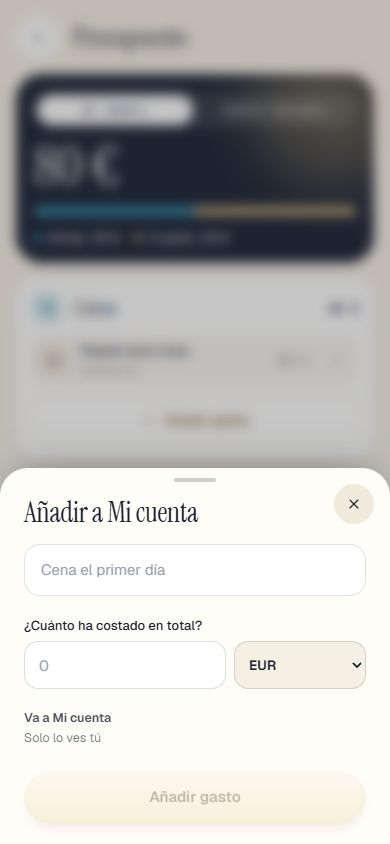
10n10_cuentas_04_anadir_mi_cuenta 10n10_cuentas_05_anadir_conjunta 10n10_cuentas_06_cuenta_grupo 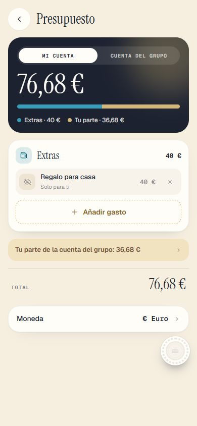
10n10_cuentas_07_mi_cuenta_grupo 10n10_cuentas_08_tu_parte 10n10_cuentas_09_editar_gasto 10n10_cuentas_10_solo_para_algunos 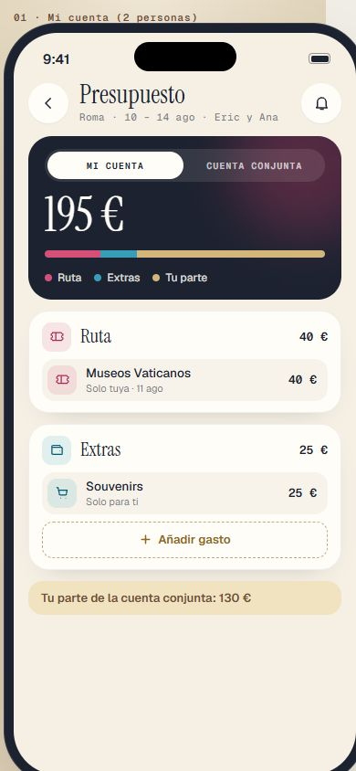
10n10_cuentas_design_01 10n10_cuentas_design_02 10n10_cuentas_design_03 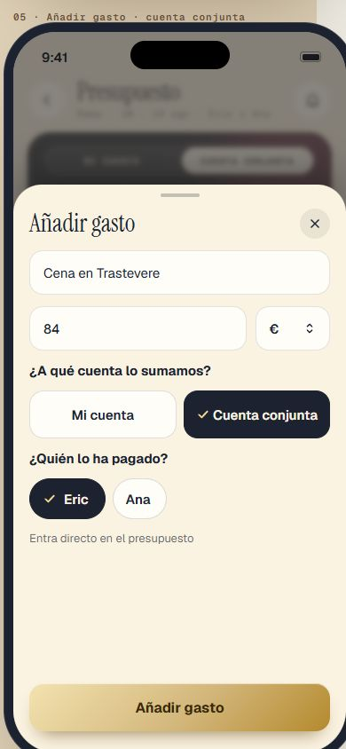
10n10_cuentas_design_05 10n10_cuentas_design_09 10n10_explorar_anadir_entre_dos_marcada 10n10_explorar_anadir_parada_lista 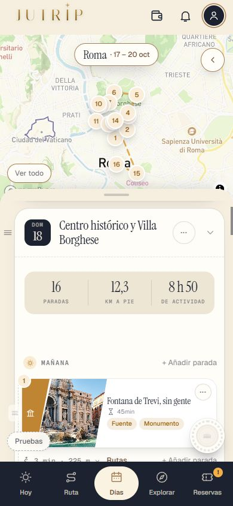
10n10_explorar_dia_abierto 10n10_explorar_entrada_no_mueve 10n10_explorar_logros_atracciones 10n10_explorar_pastilla 10n10_explorar_restaurantes 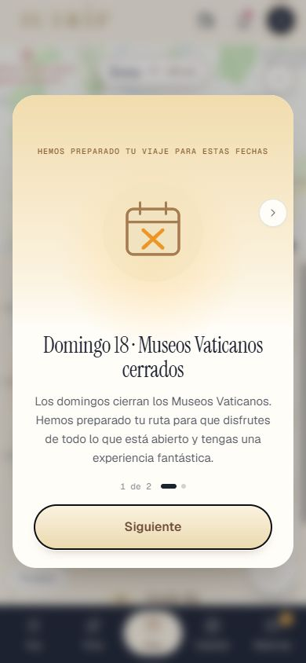
10n10_explorar_sonda_dias 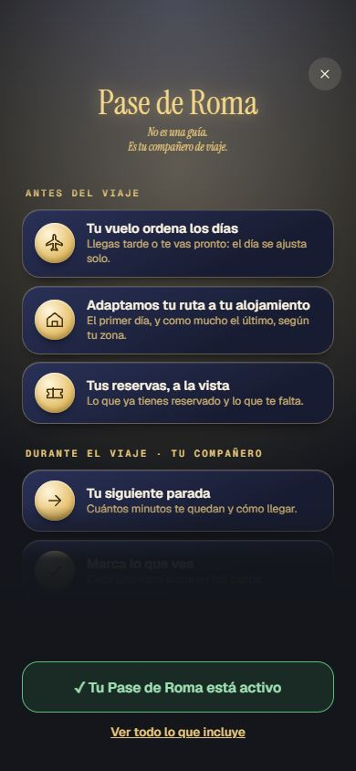
10n10_lista_pase_con_pase 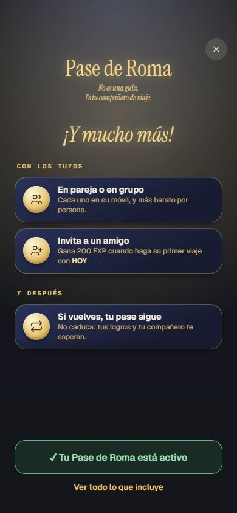
10n10_lista_pase_con_pase_final_de_lista 10n10_lista_pase_cuantos_sois 10n10_lista_pase_design_escena7 10n10_lista_pase_sin_pase 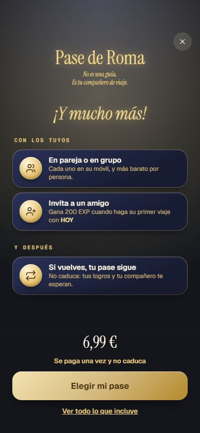
10n10_lista_pase_sin_pase_final_de_lista 10n10_reservas_01_reservas 10n10_reservas_02_vuelo_hoja 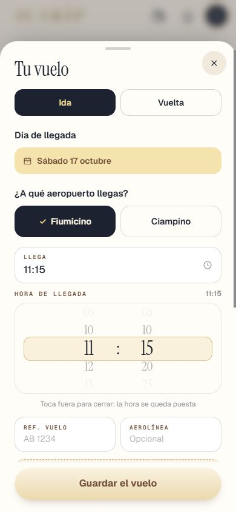
10n10_reservas_03_vuelo_rueda 10n10_reservas_04_vuelo_dinero 10n10_reservas_05_vuelo_tarjeta 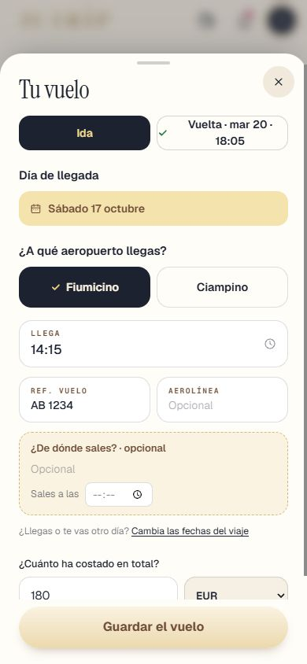
10n10_reservas_06_vuelo_solo 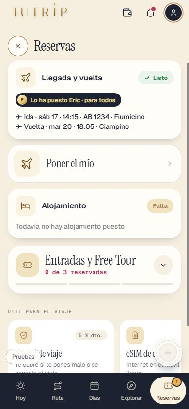
10n10_reservas_07_vuelo_lo_ve_otra_persona 10n10_reservas_08_alojamiento_hoja 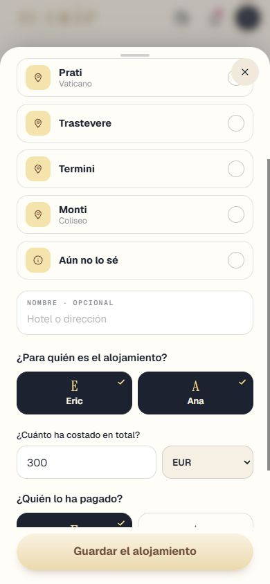
10n10_reservas_09_alojamiento_dinero 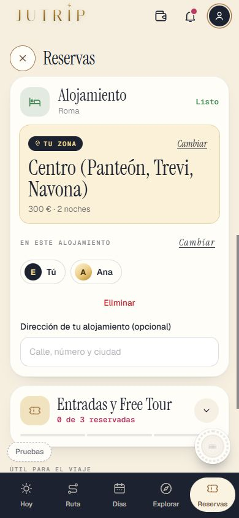
10n10_reservas_10_alojamiento_tarjeta 10n10_reservas_11_caja_pase_con_zona 10n10_reservas_12_entrada_dinero 10n10_reservas_13_ir_a_comprar 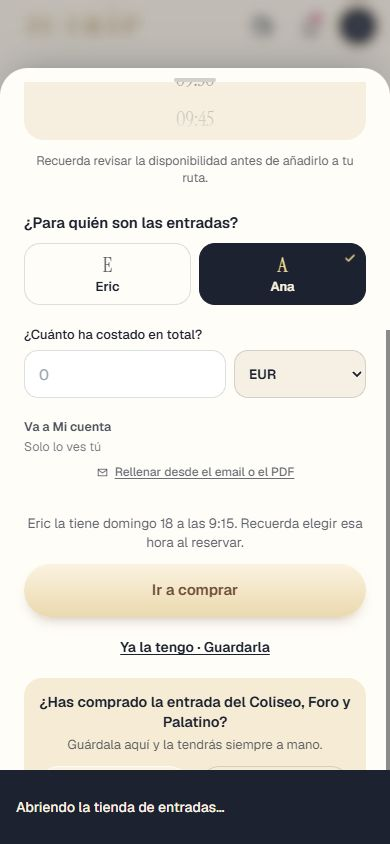
10n10_reservas_14_pregunta_al_volver 10n10_reservas_design_01 10n10_reservas_design_02 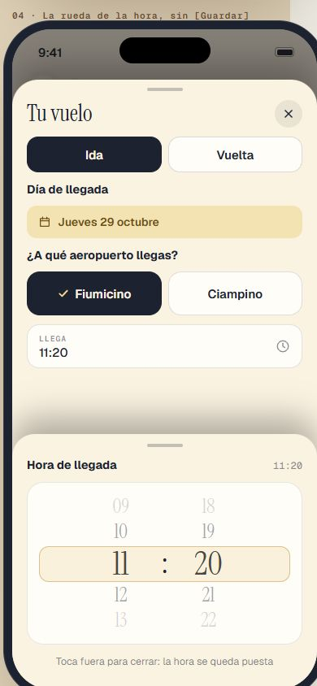
10n10_reservas_design_04 10n10_reservas_design_05 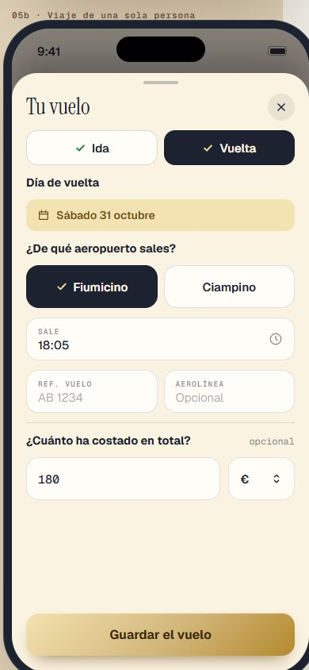
10n10_reservas_design_05b 10n10_reservas_design_06 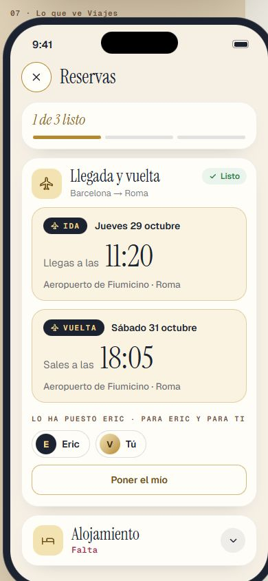
10n10_reservas_design_07 10n10_reservas_design_08 10n10_reservas_design_09 10n10_reservas_design_entrada_01 10n10_reservas_design_entrada_02